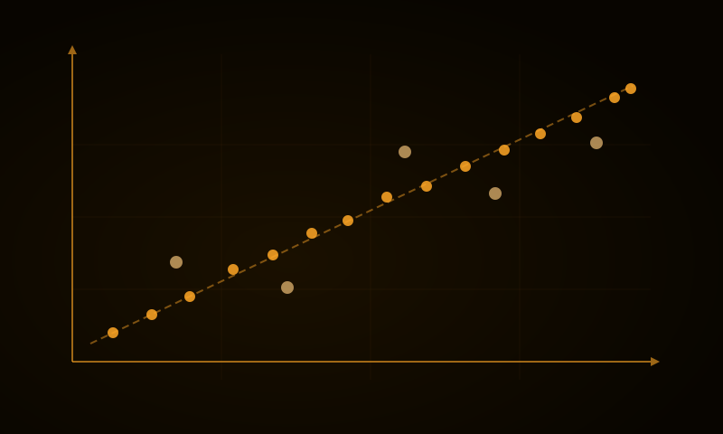

Genomics & Population Genetics
Over three decades studying how genetic variation shapes health outcomes across populations — from molecular diagnostics to large-scale genomic data analysis.
Over three decades studying how genetic variation shapes health outcomes across populations — from molecular diagnostics to large-scale genomic data analysis.
Developing and validating machine learning models for clinical decision support, with a focus on deployability in low- and middle-income country settings.
Integrating human, animal, and environmental health perspectives. Interested in the interface between data science, epidemiology, and public health at a global scale.
Teaching data science, genomics, and nutrigenomics to researchers and students. I also mentor early-career researchers through the in2research programme.
Background, career trajectory, and the interests that connect genomics, data science, and global health.
Current and past research projects, including Neotree, population genetics studies, and collaborations in Africa and Latin America.

Courses, workshops, and resources in data science, biostatistics, R, Python, and machine learning for life scientists.
Open-source tools, packages, and pipelines on GitHub — spanning genomic analysis, clinical modelling, and data visualisation.